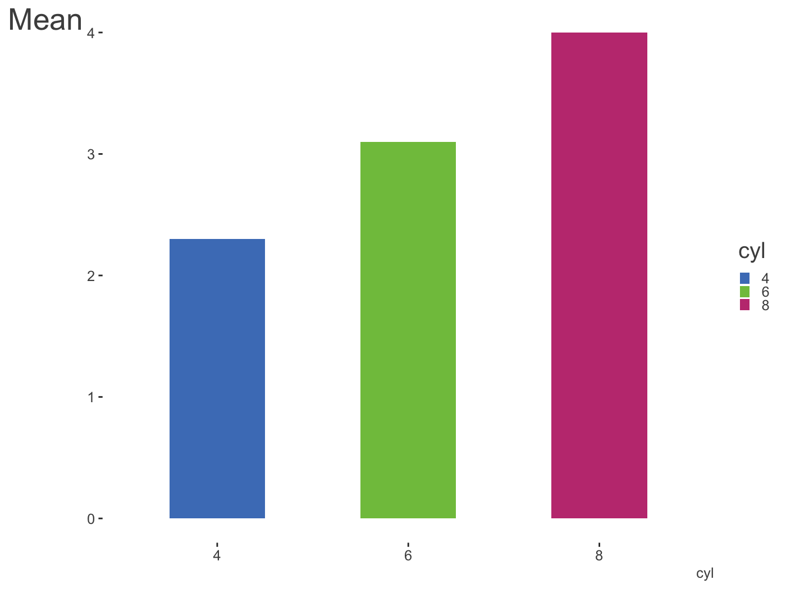
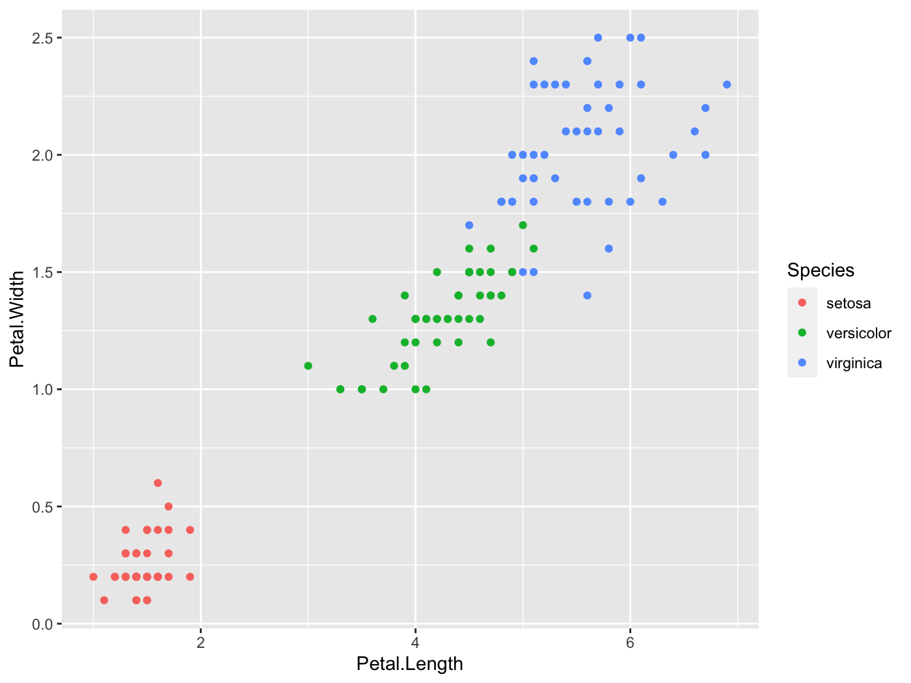
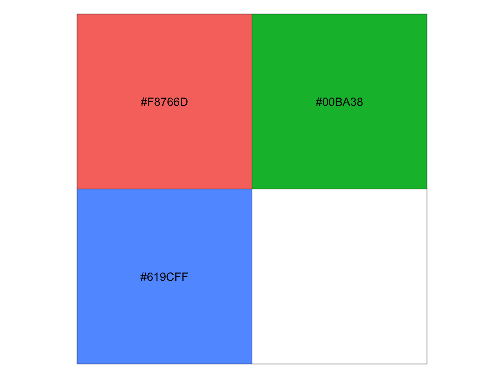
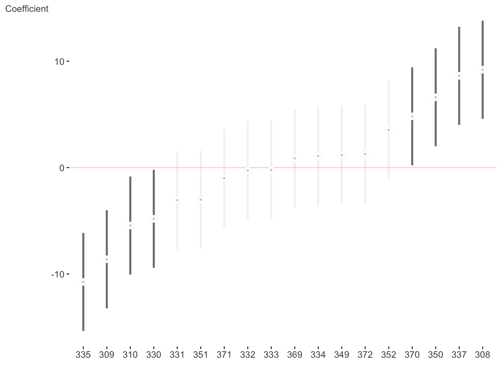
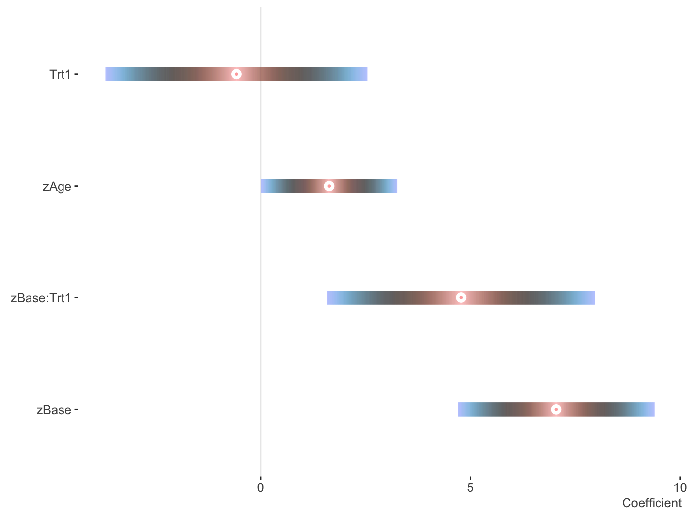
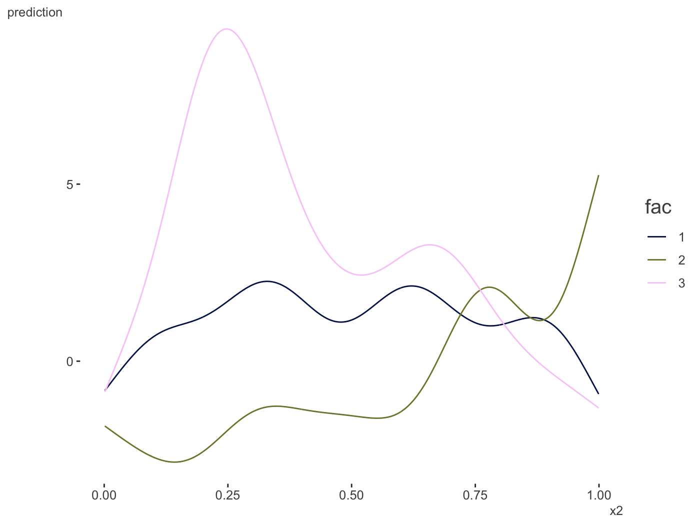

Palettes & Themes
One can get started by creating a palette. This uses the colortools package to provide evenly spaced colors, given a starting color.

$papayawhip
[1] "papayawhip"
$complementary
[1] "#FFEFD5" "#D5E5FF"
$analogous
[1] "#FFEFD5" "#FAFFD5" "#FFDAD5"
$split_complentary
[1] "#FFEFD5" "#D5FAFF" "#DAD5FF"
$triadic
[1] "#FFEFD5" "#D5FFEF" "#EFD5FF"
$square
[1] "#FFEFD5" "#D5FFDA" "#D5E5FF" "#FFD5FA"
$tetradic
[1] "#FFEFD5" "#E5FFD5" "#D5E5FF" "#EFD5FF"Here is a palette based on the blue in the R logo.
palettes$Rblue
$Rblue
[1] "#1f65b7"
$complementary
[1] "#1f65b7" "#b7701f"
$monochromatic
[1] "#1f65b7" "#366caa" "#4a719e" "#5a7491"
$analogous
[1] "#1f65b7" "#241fb7" "#1fb2b7"
$split_complementary
[1] "#1f65b7" "#b2b71f" "#b7241f"
$triadic
[1] "#1f65b7" "#66b71f" "#b71f66"
$tetradic
[1] "#1f65b7" "#b7701f" "#66b71f" "#701fb7"The palette creator can create some decent categorical distinctions without too much fuss. The following also demonstrates one of the themes, which has no grid/gray, and de-bolds the black font while leaving text clear; even the fainter version will pass web standards for contrast against a white background. As shown, you can still fiddle with the theme beyond that.
pal = create_palette('#ff5500',
name = 'orange_you_glad_you_have_this_color')
library(ggplot2)
ggplot(mtcars, aes(x=wt, y=mpg)) +
geom_point(aes(color=factor(cyl)), size=10, alpha=.5) +
scale_color_manual(values = pal$triadic) +
theme_trueMinimal()
library(dplyr)
mtcars %>%
mutate(cyl = factor(cyl)) %>%
tidyext::num_by(wt, cyl) %>%
ggplot(aes(x=cyl, y=Mean)) +
geom_col(aes(fill=cyl), width=.5, alpha=.85) +
scale_fill_manual(values = palettes$Rblue$triadic) +
theme_trueMinimal() +
theme(legend.key.size = unit(.015, 'npc'),
axis.title.y = element_text(size=20, hjust=-.05))
Another way to create palettes is with a function that works with colorgorical. It connects to that website to create colors based on things like whether they perceptually go together aesthetically, whether they are more or less perceptually distinct, or even if their name is unique.
## colorgorical(n=6, pairPreference = 1, startPalette = list(c(10, -60, 45)), output = 'hex')
[1] "#002B00" "#95C857" "#334D37" "#4EF185" "#378811" "#7FE7D3"
## colorgorical(n=10, perceptualDifference = .5, startPalette = list(c(10, -60, 45)), output = 'hex')
[1] "#002B00" "#D57381" "#77CE3F" "#DB0EAC" "#2FF52B" "#6C208E" "#B1BF81" "#4115F9" "#518512" "#B662CA"To get a starting palette from an R or hexadecimal value, try col2lab.
You can check your to see if your chosen color combinations would pass web standards for contrast sensitivity. For example, if you use blue for your hyperlinks and consider it against a white background for a webpage it passes.
color_contrast_checker(foreground = 'blue')
ratio AA AALarge AAA AAALarge
1 8.59 pass pass pass passHowever, if you consider the background as the surrounding text, perhaps not.
color_contrast_checker(foreground = 'blue', background = 'black')
ratio AA AALarge AAA AAALarge
1 2.44 fail fail fail failDefault ggplot2 colors don’t contrast well with the background. Ack!


color_contrast_checker(foreground = '#F8766D', background = 'gray92')
ratio AA AALarge AAA AAALarge
1 2.26 fail fail fail fail
color_contrast_checker(foreground = '#00BA38', background = 'gray92')
ratio AA AALarge AAA AAALarge
1 2.18 fail fail fail fail
color_contrast_checker(foreground = '#619CFF', background = 'gray92')
ratio AA AALarge AAA AAALarge
1 2.29 fail fail fail failHowever, if you want palettes that are colorblind-safe, print-safe etc., especially for continuous scales, you should use packages like viridis and scico.
Descriptive Visualization
People often want to (and should) examine correlation matrices as a prelude to modeling. One problem is that it is difficult to make much sense from the matrix when there are more than a few columns in the original data, as there are too many pairwise values present. However a little reshuffling of the rows/columns, and visually depicting the values by color can make patterns pop out quickly.
You have plenty of options for this sort of endeavor, such as corrplot, psych, and heatmaply. However, they offer only static plots or reorder based on a cluster analysis. I originally had a function that would provide some interactivity, but while utilizing a factor analytic approach. I’ve now deprecated that standalone package and brought the functionality here. The corr_heat function provides an easy way to visualize your correlations.
The psych package is used to for the factor analysis, which is better suited to survey data and similar settings, where items are of the same type, and you can supply arguments to its fa function. The plot comes from plotly, and hovering over the squares provides the value.
The color scheme is based on the previously mentioned scico package.
We can see that while there might be the usual ‘Big Five’ personality structure, it may also really just be two underlying constructs- neuroticism vs. the rest, at least for this sample.
It occurred to me while updating this functionality that a 3-d approach might actually be useful here (it isn’t the vast majority of the time). When looking at the previous structure in 3-d, we probably would only think about two factors of items.
There are multiple orderings available to help bring out the structure. This may be particularly useful if you are not dealing with measurement error type data.
Who knew the mtcars data set could actually be interesting!
Plotting Model Results
I have some visualizations for plotting uncertainty intervals for fixed and random effects of mixed models. These require the scico package, as well as lme4 and brms which are used to do the mixed models in the first place.
lm and glm
I don’t really use them aside for demonstration, but in this case the lm and glm objects served as a baseline.

Change the palette, order and more.
fit_lm = lm(mpg ~ ., mtcars)
plot_coefficients(fit_lm,
palette='oslo',
order = 'decreasing',
sd_multi = 1,
keep_intercept = TRUE,
ref_line = c(-1:1))Data only
You may want to do your own visualization, or go beyond the default settings. Rather than providing a couple dozen arguments for you to tweak, just so you can still feel like you can’t get it just quite right. Here’s the data, do with it what you will!
plot_coefficients(fit_lm, plot=FALSE)
Coefficient value ui_l ui_u
1 am 2.52022689 -1.59307422 6.63352799
2 qsec 0.82104075 -0.64064884 2.28273034
3 drat 0.78711097 -2.48363516 4.05785711
4 gear 0.65541302 -2.33110691 3.64193294
5 vs 0.31776281 -3.89125440 4.52678003
6 disp 0.01333524 -0.02237976 0.04905024
7 hp -0.02148212 -0.06501928 0.02205504
8 cyl -0.11144048 -2.20148720 1.97860625
9 carb -0.19941925 -1.85692425 1.45808574
10 wt -3.71530393 -7.50413253 0.07352467Mixed models
I do a lot of mixed models, which is my main reason for providing this functionality, so I’ve started to create some ways to plot the results of the separate fixed and random effects. We’ll use lme4.
library(lme4)
fit_mer = lmer(Reaction ~ Days + (Days|Subject), sleepstudy)
plot_coefficients(fit_mer)
And now the random effects. Fewer options can be found here, but this is intentional as you’d want them ordered and the fixed effect style would make things messy whenever there are many random effects, which is often the case. With multiple random effects, a list of ggplot objects is returned.

$Days
Now for a different palette. Again, these only apply to fixed effects visualizations, due to the number of categories typically seen with random effects and how the visualization is created.
fit_mer2 = lmer(count ~ log_Age_c + log_Base4_c * Trt +
(1 | patient),
data = brms::epilepsy)
plot_coefficients(fit_mer2,
palette = 'berlin')
You can use patchwork to put them into one graph.
plots = plot_coefficients(fit_mer, ranef = TRUE, which_ranef = 'Subject')
library(patchwork)
plots[[1]] + plots[[2]]
brms
I like brms quite a bit and use it a lot. It served as the motivation for these coefficient plots, as did bayesplot, and tidyposterior.
library(brms)
fit_brms = brm(count ~ log_Age_c + log_Base4_c * Trt +
(1 | patient) + (1 | obs),
data = epilepsy,
family = poisson)
plot_coefficients(fit_brms)
And now the random effects.
plot_coefficients(fit1, ranef = TRUE, which_ranef = 'patient') +
theme(axis.text.x = element_text(angle = -90))
GAM
Some very rudimentary plotting of basic GAM effects provided by the mgcv are provided. I really like the package, but am not crazy for the default plots, and some offered by some other packages are okay, but may not be polished enough or do the smooth plots I’d eventually like to do.
library(mgcv)
d = gamSim()
Gu & Wahba 4 term additive model
gam_model = gam(y ~ x0 + s(x1) + s(x2, bs='gp') + s(x3, bs='ps'), data=d)
plot_gam(gam_model,
main_var = x2)
plot_gam(gam_model,
main_var = vars(x1, x2, x3),
ncol = 1,
line_color = palettes$Rblue$Rblue,
ribbon_color = palettes$Rblue$complementary[2])

2d smooths
Some initial functionality is provided for continuous-by-continuous interactions and continuous-by-categorical interaction plots.
d = gamSim(2, scale = .1)$data
Bivariate smoothing example
gam_model = gam(y ~ s(x, z, bs='gp'), data=d)
plot_gam_2d(gam_model,
main_var = x,
second_var = z,
n_plot = 200)A categorical moderator.
d = gamSim(4)
Factor `by' variable example
gam_model = gam(y ~ s(x2, fac, bs='fs'), data=d)
plot_gam_by(gam_model,
main_var = x2,
by_var = fac)